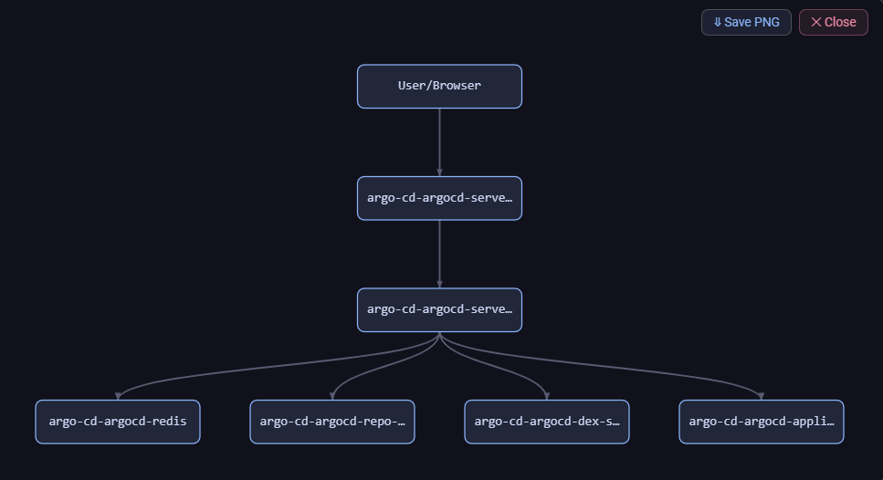
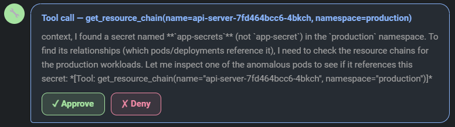
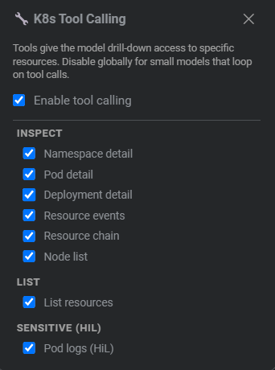
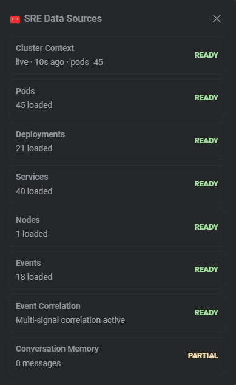
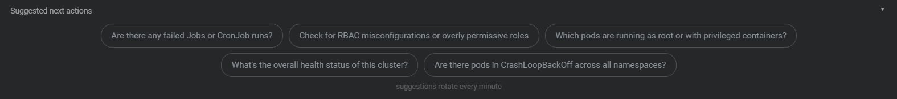

An AI-powered SRE assistant that sees your live cluster state — pods, deployments, nodes, events — and helps you troubleshoot, write YAML, and understand incidents without leaving your dashboard. Powered by local Ollama. No data leaves your network.
Designed to run well on small (4–9 B) models against real-world mid-size clusters.
Conversational assistant embedded directly in the Freelens cluster view. Ask in plain English — get structured SRE answers.
The model sees pods, deployments, services, nodes, and events via direct KubeApi.list() calls — not cached stale data.
Click the robot icon on any workload — a 640 px side panel slides in with analysis already running. No page navigation needed.
BM25 retrieval, non-blocking summarisation, and anomaly-first sorting keep the model focused on what matters — even on large clusters.
The assistant drills into specific resources on demand. Every tool call shows an Approve / Deny card — you stay in control.
Queries auto-classified as write, investigate, explain, or general — response format adapts automatically. No more investigation preambles for a simple YAML request.
Relationship diagrams render as native Canvas — zero npm dependencies, K8s colour coding, full-screen expand, and PNG export.
All API calls use Node.js HTTP — no browser mixed-content issues. Plain HTTP remote Ollama works. Cloud endpoints supported via Preferences.
~85% token reduction on large clusters via persistent snapshots, namespace health rollups, and query-relevant BM25 filtering.
Context pipeline designed specifically to avoid "lost-in-the-middle" failures on small models.
| v0.1.0 | v0.2.0+ | |
|---|---|---|
| System prompt cluster section (180 pods) | ~6,500 tokens | ~1,000 tokens |
| Reduction | — | ~85% |
| Pods injected per message | All | 15 most relevant + all anomalies |
| History compression | None | After 20 pairs → background summary |
| Added latency from compression | — | Zero (post-response) |





Override auto-detection with a preset that matches your current task.
curl -fsSL https://ollama.com/install.sh | sh
ollama serveollama pull qwen2.5:7b # recommended — strong tool-calling
ollama pull gemma3:9b # best reasoning on large clusters⚠️ Models < 4B parameters may fail on tool calls and structured reasoning.
git clone https://github.com/biurea/freelens-ollama-extension.git
cd freelens-ollama-extension
pnpm install && pnpm build && pnpm packOpen Freelens → Extensions → Add Local Extension → select the generated .tgz file.
The K8s SRE Assistant icon will appear in the left cluster sidebar. Click it to start chatting.